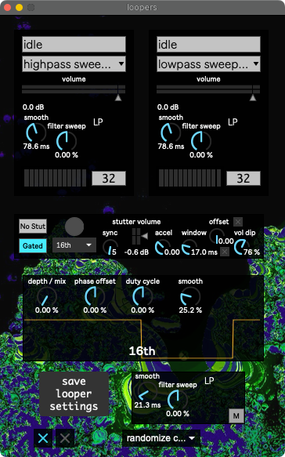

Loopers¶
A simple “one-button” looper followed by a handful of effects.
{kind=link}
The looper has five states.
- Idle
- Prepared
- Recording
- Looping
- Fading Out
Hitting the button (called looper record / fade out in the bindings)
advances the looper state from Idle to Prepared,
and playing tuba advances from Prepared to Recording.
After 8 bars or so, the looper automatically stops Recording
and starts Looping. Hitting the button a second time
begins Fading Out the looper over the course of 8 bars.
A second loop can be recorded while the first’s fading out.
Below the two loopers are the post-loop Stutter, Tremolo, & Filters. The following bindings are available:
Looper Stutter Enable (trig)Looper Stutter Accel (bi)Looper Stutter Random Rhythm (trig)Looper Filters (bi)Looper Tremolo Duty (bi)Looper Tremolo Depth (uni)Looper Delay Send 1 (uni)Looper Delay Send 2 (uni)Looper Delay Send 3 (uni)Looper Delay Send 4 (uni)loopers tremolo and stutter subdivisionlooper record / fade outmute loopers